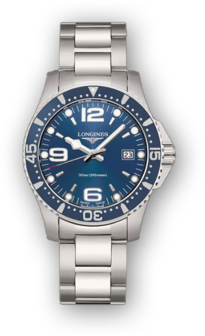

 <swiper
    [slidesPerView]="3"
    [initialSlide]="1"
    [spaceBetween]="180"
    [slideToClickedSlide]="true"
    slideActiveClass="realWidth"
    slideClass="little"
    [centeredSlides]="true"
    [loop]="true"
    [pagination]="false"
    class="mySwiper"
  >

    <ng-template swiperSlide></ng-template>
   <ng-template swiperSlide></ng-template>
   <ng-template swiperSlide></ng-template>
    <ng-template swiperSlide></ng-template>

  </swiper>`


